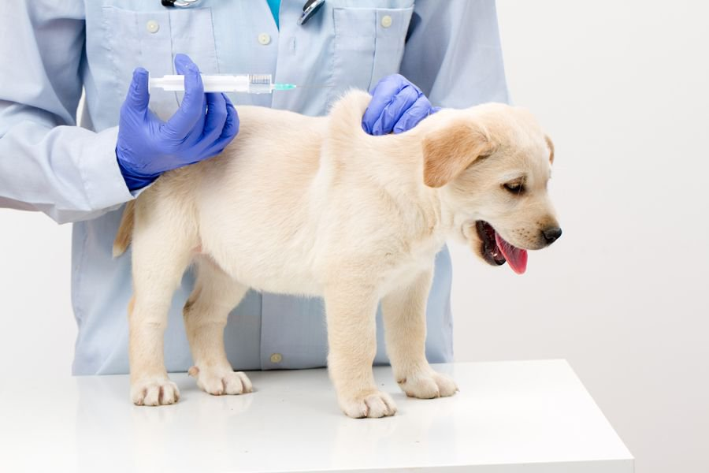

- Tiêm Vaccine:
- Tẩy giun sán:
Khi mới sinh, chó con có lượng kháng thể rất thấp nên dễ mắc các bệnh nguy hiểm, cho nên tiêm phòng là bước thiết yếu. Có 3 loại, phòng 3 bệnh, 5 bệnh và 7 bệnh. Nên chọn loại 5 hoặc 7 bệnh vì hiệu quả phòng bệnh cao hơn rất nhiều.
Chó con khoảng 3 tuần tuổi nên bắt đầu tiêm mũi đầu tiên, 6 tuần tiêm mũi thứ 2. Thông thường, đến mũi thứ 2 là có thể ngưng nhưng nếu muốn chắc chắn hơn thì có thể tiêm tiếp mũi thứ 3 vào 9 tháng tuổi. Khoảng 12 tuần tuổi có thể tiêm phòng dại và mỗi năm một lần.
Việc tẩy giun cho chó con cần phải thực hiện từ sớm và thường xuyên theo chu kỳ với từng độ tuổi nhất định. Với chó dưới 6 tháng tuổi, nên tẩy giun cho chó mỗi tháng 1 lần, riêng 4 lần đầu tiên tẩy 2 tuần 1 lần, bắt đầu từ 2 tuần tuổi. Chó trên 6 tháng tuổi cứ 3 – 4 tháng 1 lần cho đến khi được 1 tuổi thì chỉ cần lặp lại mỗi năm 1 lần.